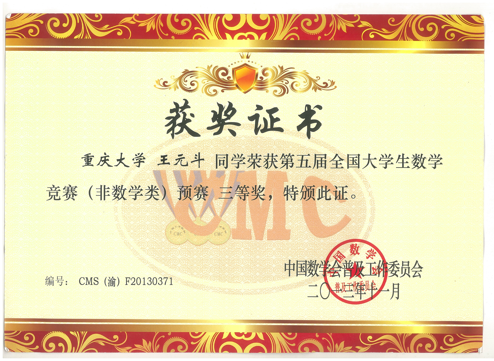

重庆大学优秀研究生干部（2018）
|

第五届全国大学生数学竞赛预赛 三等奖（2013） |
“TI杯”重庆市大学生电子设计竞赛 成功参赛奖（2014） |
重庆大学“智慧校园”APP大赛 APP作品组三等奖（2015） |
Honorable Mention at Interdiciplinary Contest In Modeling Certificate of Achievement (ICMCA 2015) |